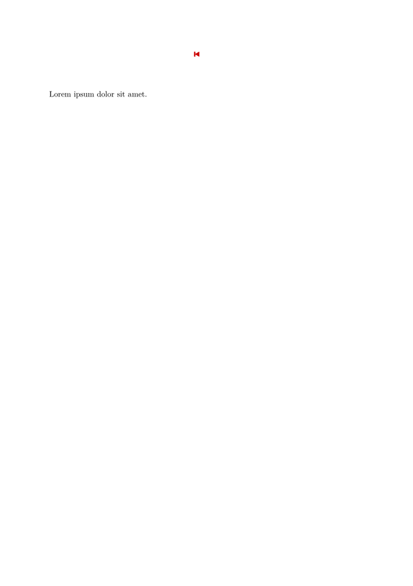

Contents
Warning
This page has rarely been updated since 2006.
Producing Your Presentations with ConTeXt
After using ConTeXt for a while, many users begin to think about producing their presentations with it, too. ConTeXt is ideally suited for this task. Here’s just a very selective list of the advantages you gain:
- The superior typographic quality of TeX and ConTeXt will be available for your presentations. Users doing scientific presentations will also appreciate the well-known mathematical abilities TeX offers.
- In addition, ConTeXt has great graphics abilities (placing images and floats) and can make excellent use of color.
- Moreover, you can use all of the advanced features of ConTeXt, such as interaction or integration of metafun code.
- The material of your presentations can be reused for handouts, papers, notes, etc. If you make use of the Conditional processing with Modes feature, you can even recompile your entire presentation in a different format without changing a single line in your source.
As you probably know, ConTeXt produces PDF output by default; that’s a great advantage when you're thinking about a presentation: you can simply produce a pdf-file and open it with a viewer such as xpdf or Acrobat Reader and show the pages in fullscreen mode. This is especially appealing when you want to distribute your presentations via mail or the web or when you have to show them on equipment you don’t know: while proprietary software may or may not be available, you can usually be certain that everyone has an application for displaying pdf-files.
This section of the wiki wants to get you started with presentations in
ConTeXt. There’s lots of amazing stuff in the distribution already, such as
truly amazing 20-year-old prebuilt styles for presentations which
you can simply use by typing, e.g.
\usemodule[pre-original]
The styles are fully documented, and you can learn amazing tricks by looking at
the source and the documentation. However, for beginners, it might be easier to
start with a very basic presentation and then slowly add more fancy stuff. This
section is thus targeted at newcomers; more experienced users may want to skip
the first sections. This document deals with presentations that will be shown
with the help of a digital projector, but many elements will be applicable to
interactive screen presentations as well.
Many information are included in this article by Thomas (2006).
Aditya Mahajan maintains a step by step instruction about on how to create slides in ConTeXt in 40 commits (2020).
Your First Presentation
The first thing you will need to do is adapt the papersize: you need a paper layout in landscape mode that fits a computer screen. (Actually, this layout is smaller than a screen, but a pdf-document can be scaled without losing quality.)
Setting screen dimensions
\setuppapersize[S6][S6]
will set the proper document ratio (3:2) to fit the computer screen.
And you probably do not want any page numbers on your slides:
\setuppagenumbering[state=stop]
Setting the tolerance
Moreover, on slides, you want TeX to be tolerant with its horizontal space (since you will normally be typesetting not entire paragraphs, but single lines only, this shouldn’t be a problem):
\setuptolerance[verytolerant,stretch]
Full-screen mode
\setupinteractionscreen[option=max]
will cause launcing the PDF document in full-screen mode. In Acrobat you can use CTRL-L to switch between normal and full-screen mode.
| TODO: write something about them (See: To-Do List) |
Here is a small example showing how to include hyperlinks:
\setupcolors[state=start] \setupinteraction[state=start,color=middlered] \useURL [garden][http://contextgarden.net] \starttext The \from[garden] site is useful. \stoptext
It looks like this (in a PDF viewer the red link is clickable and should call up a browser on the link when you click it):
If you want an alternative text to show up in the clickable area, use the fourth argument to \useURL, like this:
\setupcolors[state=start] \setupinteraction[state=start,color=middlered] \useURL [garden][http://contextgarden.net][][Context garden] \starttext The \from[garden] is useful. \stoptext
It looks like this:
The same technique can be used to add navigation buttons. nav provides the symbol.
\def\fp{\goto{\symbol[firstpage]}[page(1)]} \setupheadertexts[\fp]
We can also add the button to the footer with Command/setupfootertexts.
- 
Including Graphics
See Using graphics.
Graphics with Metafun
| TODO: how to make page-dependant graphics (See: To-Do List) |
Animation
See Animation (page is still under construction).
Compiling Your First Presentation
If you compile a document with these settings, you have something that you could show as a presentation slide:
\setuppapersize[S6][S6] \setuppagenumbering[state=stop] \setuptolerance[verytolerant,stretch] \starttext Here’s my first presentation in \CONTEXT! Isn’t it amazing? \stoptext
Refining the Presentation
OK, this is not too impressive yet. The first thing you will want to do is adapt the font size. With a paper size of S6, I find a font size of 20pt about right:
\switchtobodyfont[modern,20pt]
This looks better.
Colors
Next up: colors. Now I'm aware that the use of colors is an immensely personal choice -- I've seen people present their slides with a dark gray font on a light gray background, and they seemed very proud of their design. Others use psychedelic colors that can induce serious sickness. So let’s go for a rather conservative combination of colors. Something I find very readable even in rooms where the lighting is a bit problematic is a white typeface on a blue background. So let’s add this. Our document will now look like this:
\setuppapersize[S6][S6] \setuppagenumbering[state=stop] \switchtobodyfont[modern,20pt] \setupcolors[state=start] \setupbackgrounds[page][background=color,backgroundcolor=darkblue] \startcolor[white] \starttext Here’s my first presentation in \CONTEXT! Isn’t it amazing? \stoptext
This will give you something to start from. You can now go and build a presentation with this design: make every slide a new page, use all the ConTeXt features (such as lists, itemize, tables, math, chemical formulae, etc.) you want.
Adding fancier effects
Now when you look at your slides, you will certainly feel that there’s room for improvement. There’s only a few things I can mention here; for the rest, have a look at the predefined styles to get some ideas.
First, the background. Something I find very attractive is a background that has different shades, beginning in a very dark blue at the top and ending in a noticeably lighter blue at the bottom. Metafun can easily produce such shaded backgrounds:
\definecolor[a][r=0,g=0,b=1] \definecolor[b][r=0,g=0,b=0.05] \startuniqueMPgraphic{LinearShade} path p ; p := unitsquare xscaled \overlaywidth yscaled \overlayheight ; linear_shade(p,6,\MPcolor{a},\MPcolor{b}) ; \stopuniqueMPgraphic \defineoverlay[shaded][\useMPgraphic{LinearShade}] \setupbackgrounds[page][background={shaded}]
What we have done: defined two colors; a is a very light, b a very dark blue. We let metafun calculate an interpolation between both colors. Try other values for the colors and be amazed! You can also try to set "p,6" to other values such as "p,0" or "p,4."
Next, the bottom of our slides. If the audience is apt to forget your name, the title of your talk, and the date, you could include this vital information in the footer of the page.
\setupfootertexts[{\color[white]{\tfxx \midaligned{\rlap{\currentdate} \hfill TITLE HERE\hfill \llap{YOUR NAME HERE}}}}]
Don’t forget to put
\setupfooter[state=start]
into your document where you want the footer to appear first (probably not on the title of your presentation...).
Adding a Progress Meter
If your audience is able to remember these details, but you suspect they may be yearning for the end of your presentation, you may want to include a "progress meter" that highlights how many slides they have seen and how many more they will have to stand. Put this in your preamble:
\definecolor [InteractionColor] [s=.2] \definecolor [ContrastColor] [s=.5] \setupinteraction [page=yes, color=InteractionColor, contrastcolor=ContrastColor, menu=on, state=start] \setupsubpagenumber [way=bytext, state=start] \setuplayout[bottomspace=.8cm, bottom=12pt] \startinteractionmenu[bottom] {\interactionbar[alternative=f,width=\makeupwidth,height=1ex]} \stopinteractionmenu
Again, don’t forget to put
\setupinteractionmenu[state=start]
into your text.
Finally, a few things about the placement of pictures. This can be done with the \framed command. You probably have to try and adjust different parameters to get exactly what you need, but here’s something that worked for me:
Adding Pictures
In the case of wide pictures, it’s fairly easy. You will want them midaligned, and you'll want them to fill as much space of the area between your title and the footer as possible:
\midaligned{\externalfigure[NAME][height=.75\textheight]} %Adjust! \vfill
I found it more difficult to have longish narrow pictures: in that case, I don’t want a title above the picture, but I want it to fill all the vertical space between the top margin and the footer. I want the text accompanying the picture opposite it, centered horizontally and vertically. This can be done with a \startcombination:
\setupcombinations[distance=0pt] \setupframed[frame=off,height=.9\textheight,width=.5\textwidth,top=\vss,bottom=\vss,align=middle] \startcombination \framed{\externalfigure[NAME][width=.5\textwidth]}{} %watch the pair of empty braces, \framed{YOUR TEXT GOES HERE}{} % it’s essential \stopcombination
Post Processing Presentation
Sometimes one wants to give a handout of the presentation, with multiple slides on one page. It is easy to do this using \combinepages or texexec --pdfcombine
To use \combinepages, suppose that your presentation is slides.tex. Create a file handout.tex with the following content
\setuppapersize [A4][A4] % or [A4,landscape][A4,landscape] \setuplayout [header=0pt,footer=1cm, backspace=1cm,topspace=1cm, width=middle,height=middle] \setupfootertexts [presentation---\currentdate\space---\space\pagenumber] \starttext \combinepages[slides][nx=2,ny=3,frame=on] \stoptext
This will give you 2*3 slides on A4 paper.
Additional modules or tips
-
For steps
- The Raw steps module enables you to build a presentation step-by-step without the usage of JavaScript
-
Stepper which is buit in ConTeXt.Broken - The simple slides module simple-slides serves too.
- Presentation effects , Presentation Styles , Macros for presentation with steps
- See Using graphics or Including audio and video how to use movies.
- See Hiding content with effects can be useful for slides.
Examples of presentations
See also Sample documents
If you're interested in presentations, your first stop should be the pragma website. You can download pdfs with the documented source-code of 18 presentation modules at http://www.pragma-ade.nl/dir/general/sources/. To get a first impression of the visual appearance that the prebuilt styles offer, have a look at http://www.pragma-ade.nl/show-pre.pdf (big document, ~ 3 MB!).
| TODO: collect some + some extremely simple (See: To-Do List) |
- Slides example by Aditya Mahajan
Some Ideas
Here’s an Interesting post, written by Maurice Diamantini:
[[2]]
...
So I think that ConTeXt should provide a mean (option in textexec)
to make pdf-only version of presentation.
Finaly there could be three output levels for pdf presentation :
- presentation step using javascript (with allow blinking, merging, zooming or other nice flashing features ;-)
-
presentation step
without javascript
(one pdf page by step)
- Good format for presentation by foreign pdf reader
-
pdf file
one pdf page
for each final step by page
- Good format for printing 2up or 4up slides
- This third output would also allow to print a "slide + comment" version of the presentation for the speaker.
The option of texexec could be something like
--pdfonly
instead of --pdf, or simply
--use-javascript=false
- In general, I seem to have much more luck with advi then with xdvi for doing slides. It supports all kinds of interactive things. I've been told it can even do plugins (movies and such), but they only have a LaTeX package to support that.
Working Example (for the ones not satisfied with \presentationstep)
Here are some simple macros almost fully satisfying the idea above with Macros for presentation with steps, shared with the others by Otared Kavian: [[3]]. David Munger also derived an alternative [[4]] from Otared Kavian’s work. Bateni has ported that work to MkiV [[5]]